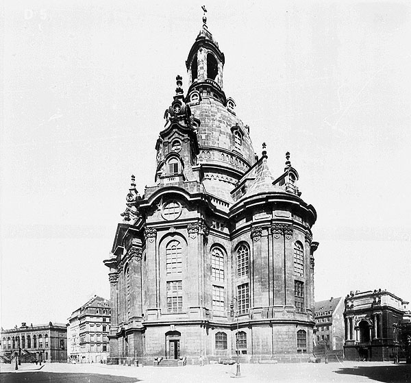
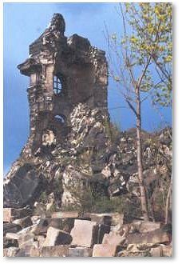
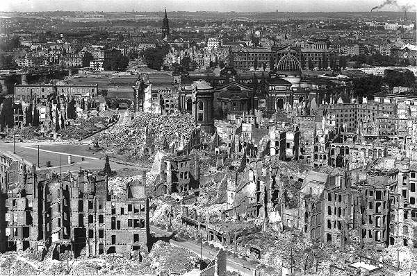
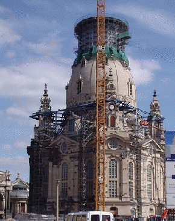
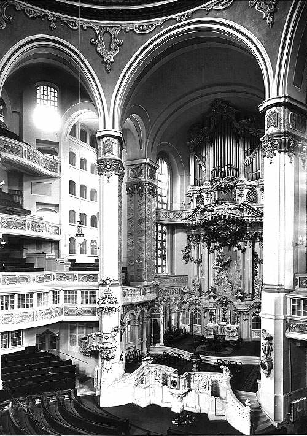

Obnova drážďanského chrámu

Stavba drážďanského chrámu Panny Marie pocházela z 18. století a tvořila dominantu Drážďan. Zničena byla při spojeneckém bombardování na sklonku války v noci ze 13. na 14. února 1945, při němž v Drážďanech zahynulo kolem 35000 lidí. Trosky chrámu byly po válce ponechány na místě jako memento válečných hrůz. Po sjednocení Německa padlo po mnohaletých kontroverzních diskuzích rozhodnutí chrám obnovit v původní podobě.
Z místa, kde chrám stál bylo odvezeno 22500 metrů krychlových trosek a v květnu 1994 byla zahájena stavba repliky podle původní dokumentace a projektů. Kostel je budován opět z pískovcových bloků, kterých je téměř milión, z toho jen 3634 původních, vyproštěných z trosek. Náklady na stavbu se odhadují na 130 miliónů eur (přes čtyři miliardy Kč.), většina pochází od soukromých sponzorů. Chrám by měl být znovu vysvěcen 30. října 2005. (volně dle Katolického týdeníku 17./2004 - brt) |


